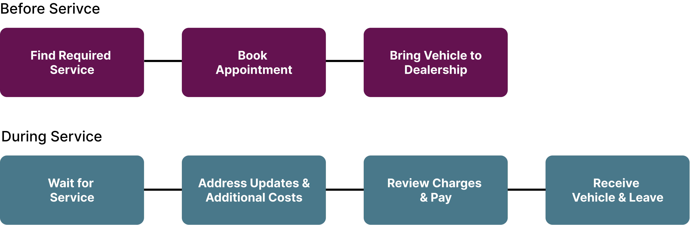
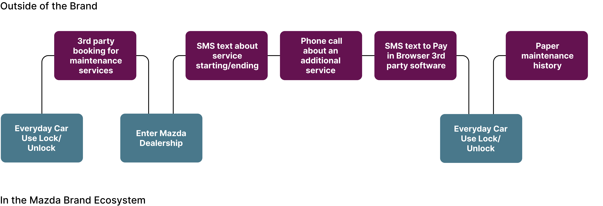
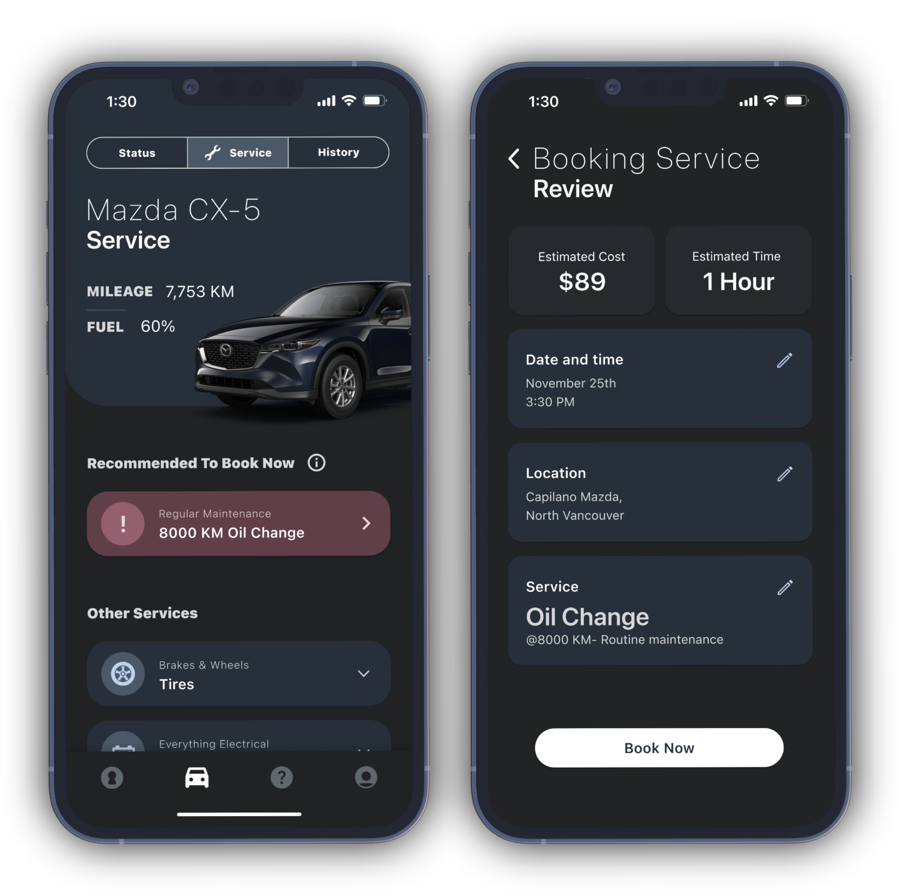
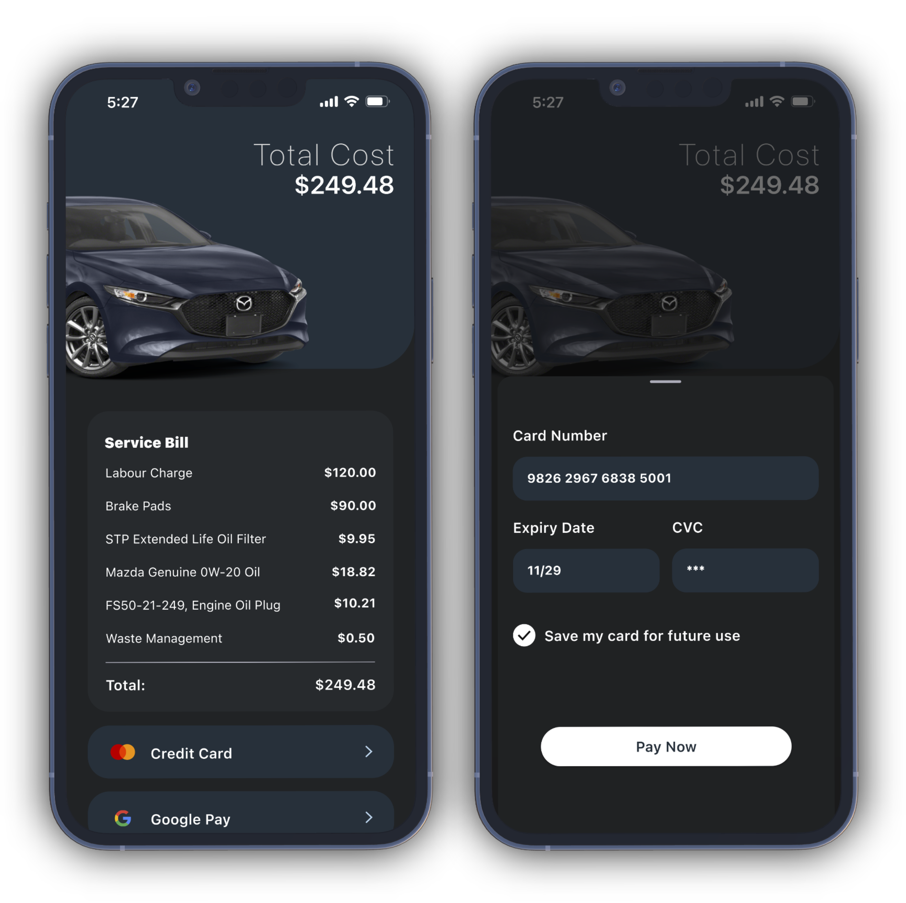
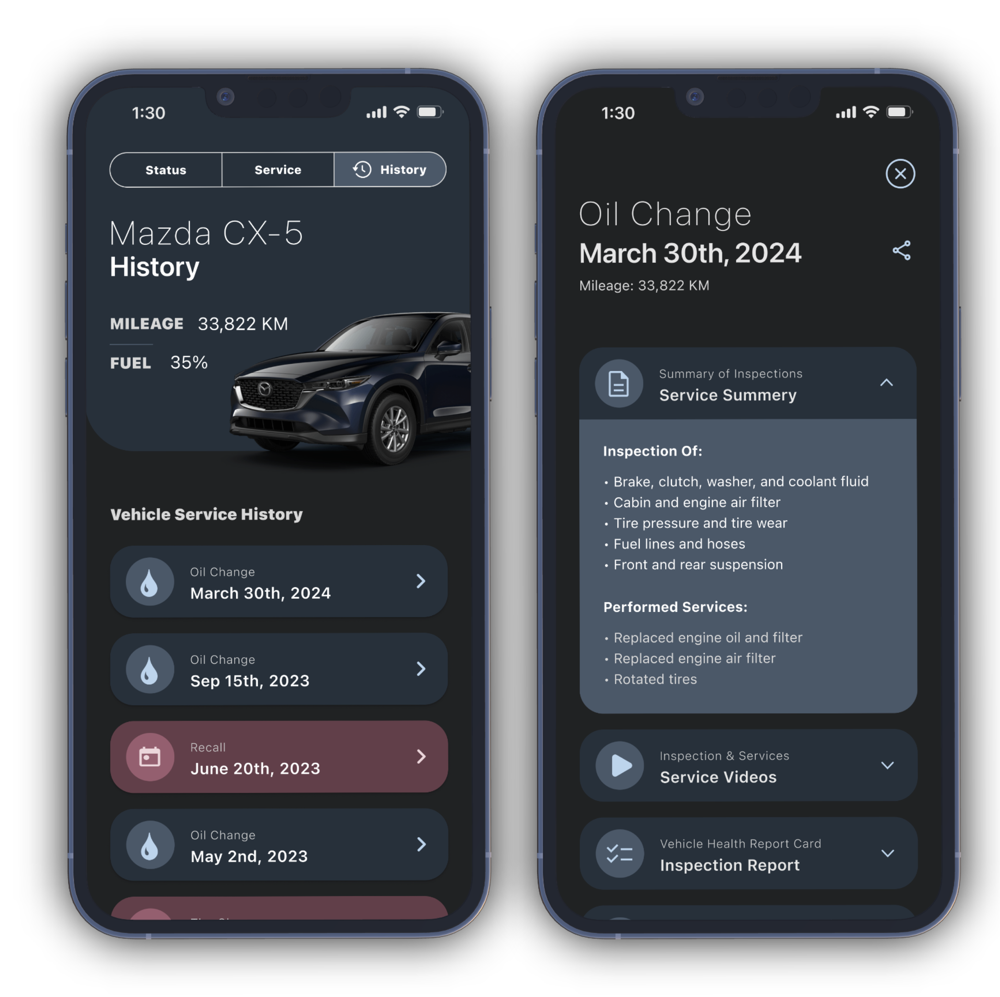
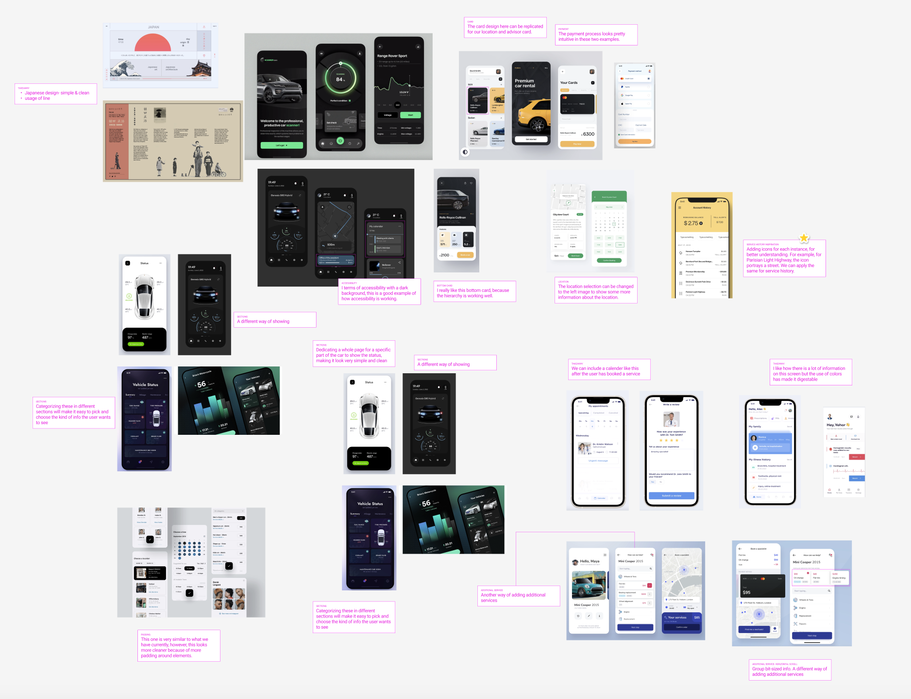
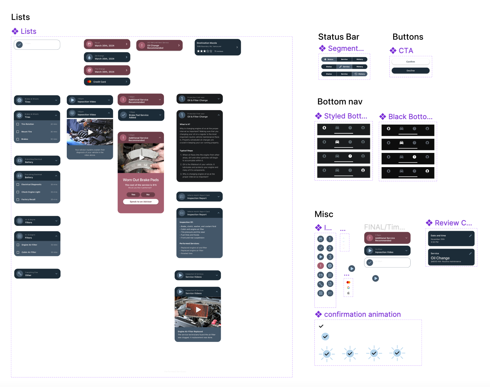

Role:
UI designer (Design Systems)
UX designer
Team:
Chinmayee Kusnur
Paige Heatherington
Tyler Barlow
Sina Omidallah
Duration:
Nov - Dec 2022 | 5 weeks
Fall 2022
About the Project
A senior design
course project focused on experience design. Our objective was to address a business problem by applying
design principles to find a solution. Our chosen endeavor involved enhancing the Mazda dealership vehicle
maintenance product, with a focus on leveraging existing touchpoints to elevate the overall vehicle
maintenance experience for Mazda owners. Additionally, we were eager to revamp the product's visual design.
In this project, my main responsibilities revolved around crafting a unified design system using Figma and
refining the user experience of the app.
Design problem
50% of car dealership gross profits are from maintenance and repair services. However, according to Cox
Automative maintenance and repair study 65% of vehicle owners do not get their vehicle serviced at a dealership
due to a poor experience caused by: Percieved unfair pricing,
Lack of transparency & Time cost & uncertainty.
"We only see 15% of owners come back for even 1 service after a sale"
- Mazda Port Moody Service Manager
Area of Intervention
After gathering feedback from numerous vehicle owners, we discovered that many of them preferred alternative
service options like Jiffy Lube, Midas, or independent mechanics over dealerships. The prevailing
perception was that dealerships were more costly and time-consuming, leading to a lack of trust in
their services. To combat these misconceptions and increase the perceived value of dealership services,
we decided to address the emerging needs of vehicle owners regarding transparency and uncertainty in the
services provided. Our goal was to enhance the overall experience of Mazda owners throughout the entire
service process, from the moment they arrive until the completion of the service.

Framing the Problem
In 2021, Mazda launched MyMazda, a mobile app enabling users to lock/unlock the car, adjust heating, and control
fundamental vehicle features. Despite its functionality, the app had some limitations as users were redirected
multiple times to various third-party sites for tasks such as booking service appointments, making payments,
and getting service. Recognizing this opportunity for improvement, we aimed to integrate all touchpoints
directly within the app. Our objective was to enhance transparency by providing users with clear information
about the time and cost of the service, all within the seamless experience of the MyMazda app.

Solution
Bringing Awareness to Maintenance Needs
We wanted Mazda owners to know all of the service details of their cars through this app. Hence, we created a service section in one of the apps where they get complete information about upcoming services and maintenance required for specific car parts. This allows us to increase the transparency of their repair services, communicate both the “what” and “why” of service and remove booking friction, thereby increasing the number of owners who follow through with the appointment.

Keeping the Owner Informed During the Service
One of the main reasons vehicle owners didn't go to dealerships was the lack of trust. By giving step-by-step details of the service, we can establish a trustworthy connection between the owner and service team, accommodate busy schedules by providing live updates and provide price transparency to mitigate owner frustration and anxiety.
Allowing the Owner to Make Informed Decisions
Every time before the service begins, the mechanic performs an inspection to check if any additional services are required. Instead of asking the vehicle owner through third-party applications, they can send a video of the issue and ask via the app. By giving the control to the owner to make decisions for their vehicle, we can provide transparency through updating vehicle status throughout service and additional evidence through video and facilitate digital decision-making to help owners make choices based on knowledge rather than social pressure.
Keeping the Owner Within One Touchpoint, Even When Paying for a Service
By bringing the payment touchpoint inside the app, we can remove any kind of payment friction to provide a
thoughtful end-of-service experience and strengthen the brand perception with a better experience.

Providing a Detailed Service History
A service history folder is essential for any vehicle owner, especially when selling the car, and we decided to digitalize it and integrate it into the MyMazda App. They can now see details about every service and show the next potential owner that the car was well-cared for. The service history tab includes the service summary, service videos, inspection reports and the receipt. Finding details about a specific service through the app is more straightforward than looking through multiple receipts in the vehicle's glove box. Additionally, it acts as a touchpoint for a new owner to onboard the MyMazda application.

User Interface
One of my main responsibilities in the team was User Interface Design. My initial process was to find inspiration for different ways to add features we outlined to improve the app's user experience. My process included taking ideas from existing apps on my phone, Dribble and Pinterest. Once I had enough pictures, I created an outline incorporating those ideas into our user flow. Tyler and Sina then took over the visual design of the app.

Additionally, I took the lead in creating a cohesive design system for this project. It included leveraging my Figma skills and creating a simple system for the project with multiple components, variants and instances.

What did I learn?
1. Importance of Design Research:
Throughout the project, I gained valuable experience in conducting thorough design research,
delving into user preferences, pain points, and behaviors. This process allowed me to
uncover insights that guided our design decisions and ensured that the MyMazda app catered
to the specific needs and expectations of Mazda owners.
2. Collaboration:
Working collaboratively with the team, I learned the importance of combining diverse perspectives
and expertise to create holistic and innovative solutions. Embracing the ideology of adding
value to the business, brand, and design, I ensured that our design choices aligned with the
overarching goal of enhancing the user experience and increasing customer trust in dealership
services.
3. Experience Design Foundation:
This project served as a practical application of experience design principles. By focusing on transparency,
user-friendliness, and seamless integration of touchpoints, I grasped the fundamental aspects of
experience design and how it can positively impact user engagement and satisfaction in digital products
like the MyMazda app.